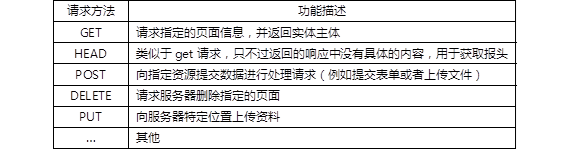

本案例要求熟悉audit审计工具的基本使用，完成以下任务操作：
审计的目的是基于事先配置的规则生成日志，记录可能发生在系统上的事件（正常或非正常行为的事件），审计不会为系统提供额外的安全保护，但她会发现并记录违反安全策略的人及其对应的行为。
审计能够记录的日志内容：
a) 日期与事件以及事件的结果
b) 触发事件的用户
c) 所有认证机制的使用都可以被记录，如ssh等
d) 对关键数据文件的修改行为等都可以被记录
实现此案例需要按照如下步骤进行。
步骤一：配置audit审计系统
1）安装软件包，查看配置文件（确定审计日志的位置）
- [root@proxy ~]# yum -y install audit //安装软件包
- [root@proxy ~]# cat /etc/audit/auditd.conf //查看配置文件，确定日志位置
- log_file = /var/log/audit/audit.log //日志文件路径
- [root@proxy ~]# systemctl start auditd //启动服务
- [root@proxy ~]# systemctl enable auditd //设置开机自启
2）配置审计规则
可以使用auditctl命令控制审计系统并设置规则决定哪些行为会被记录日志。
语法格式如下：
- [root@proxy ~]# auditctl -s //查询状态
- [root@proxy ~]# auditctl -l //查看规则
- [root@proxy ~]# auditctl -D //删除所有规则
定义临时文件系统规则：
- #语法格式：auditctl -w path -p permission -k key_name
- # path为需要审计的文件或目录
- # 权限可以是r,w,x,a(文件或目录的属性发生变化)
- # Key_name为可选项，方便识别哪些规则生成特定的日志项
- [root@proxy ~]# auditctl -w /etc/passwd -p wa -k passwd_change
- //设置规则所有对passwd文件的写、属性修改操作都会被记录审计日志
- [root@proxy ~]# auditctl -w /etc/selinux/ -p wa -k selinux_change
- //设置规则，监控/etc/selinux目录
- [root@proxy ~]# auditctl -w /usr/sbin/fdisk -p x -k disk_partition
- //设置规则，监控fdisk程序
- [root@proxy ~]# auditclt -w /etc/ssh/sshd_conf -p warx -k sshd_config
- //设置规则，监控sshd_conf文件
如果需要创建永久审计规则，则需要修改规则配置文件：
- [root@proxy ~]# vim /etc/audit/rules.d/audit.rules
- -w /etc/passwd -p wa -k passwd_changes
- -w /usr/sbin/fdisk -p x -k partition_disks
步骤二：查看并分析日志
1）手动查看日志
查看SSH的主配置文件/etc/ssh/sshd_conf，查看audit日志信息：
- [root@proxy ~]# tailf /var/log/audit/audit.log
- type=SYSCALL msg=audit(1517557590.644:229228): arch=c000003e
- syscall=2 success=yes exit=3
- a0=7fff71721839 a1=0 a2=1fffffffffff0000 a3=7fff717204c0
- items=1 ppid=7654 pid=7808 auid=0 uid=0 gid=0 euid=0 suid=0
- fsuid=0 egid=0 sgid=0 fsgid=0 tty=pts2 ses=3 comm="cat"
- exe="/usr/bin/cat"
- subj=unconfined_u:unconfined_r:unconfined_t:s0-s0:c0.c1023 key="sshd_config"
- .. ..
- #内容分析
- # type为类型
- # msg为(time_stamp:ID)，时间是date +%s（1970-1-1至今的秒数）
- # arch=c000003e，代表x86_64（16进制）
- # success=yes/no，事件是否成功
- # a0-a3是程序调用时前4个参数，16进制编码了
- # ppid父进程ID，如bash，pid进程ID，如cat命令
- # auid是审核用户的id，su - test, 依然可以追踪su前的账户
- # uid，gid用户与组
- # tty:从哪个终端执行的命令
- # comm="cat" 用户在命令行执行的指令
- # exe="/bin/cat" 实际程序的路径
- # key="sshd_config" 管理员定义的策略关键字key
- # type=CWD 用来记录当前工作目录
- # cwd="/home/username"
- # type=PATH
- # ouid(owner's user id） 对象所有者id
- # guid(owner's groupid） 对象所有者id
2）通过工具搜索日志
系统提供的ausearch命令可以方便的搜索特定日志，默认该程序会搜索/var/log/audit/audit.log，ausearch options -if file_name可以指定文件名。
- [root@proxy ~]# ausearch -k sshd_config -i
- //根据key搜索日志，-i选项表示以交互式方式操作
本案例要求优化提升常见网络服务的安全性，主要完成以下任务操作：
Nginx安全优化包括：删除不要的模块、修改版本信息、限制并发、拒绝非法请求、防止buffer溢出。
MySQL安全优化包括：初始化安全脚本、密码安全、备份与还原、数据安全。
Tomcat安全优化包括：隐藏版本信息、降权启动、删除默认测试页面.
实现此案例需要按照如下步骤进行。
步骤一：优化Nginx服务的安全配置
1） 删除不需要的模块
Nignx是模块化设计的软件，需要什么功能与模块以及不需要哪些模块，都可以在编译安装软件时自定义，使用--with参数可以开启某些模块，使用--without可以禁用某些模块。最小化安装永远都是对的方案！
下面是禁用某些模块的案例：
- [root@proxy ~]# tar -xf nginx-1.12.tar.gz
- [root@proxy ~]# cd nginx-1.12
- [root@proxy nginx-1.12]# ./configure \
- >--without-http_autoindex_module \ //禁用自动索引文件目录模块
- >--without-http_ssi_module
- [root@proxy nginx-1.12]# make
- [root@proxy nginx-1.12]# make install
2） 修改版本信息，并隐藏具体的版本号
默认Nginx会显示版本信息以及具体的版本号，这些信息给攻击者带来了便利性，便于他们找到具体版本的漏洞。
如果需要屏蔽版本号信息，执行如下操作，可以隐藏版本号。
- [root@proxy ~]# vim /usr/local/nginx/conf/nginx.conf
- … …
- http{
- server_tokens off; //在http下面手动添加这么一行
- … …
- }
- [root@proxy ~]# nginx -s reload
- [root@proxy ~]# curl -I http://192.168.4.5 //查看服务器响应的头部信息
但服务器还是显示了使用的软件为nginx，通过如下方法可以修改该信息。
- [root@proxy nginx-1.12]# vim +48 src/http/ngx_http_header_filter_module.c
- //注意：vim这条命令必须在nginx-1.12源码包目录下执行！！！！！！
- //该文件修改前效果如下：
- static u_char ngx_http_server_string[] = "Server: nginx" CRLF;
- static u_char ngx_http_server_full_string[] = "Server: " NGINX_VER CRLF;
- static u_char ngx_http_server_build_string[] = "Server: " NGINX_VER_BUILD CRLF;
- //下面是我们修改后的效果：
- static u_char ngx_http_server_string[] = "Server: Jacob" CRLF;
- static u_char ngx_http_server_full_string[] = "Server: Jacob" CRLF;
- static u_char ngx_http_server_build_string[] = "Server: Jacob" CRLF;
- //修改完成后，再去编译安装Nignx，版本信息将不再显示为Nginx，而是Jacob
- [root@proxy nginx-1.12]# ./configure
- [root@proxy nginx-1.12]# make && make install
- [root@proxy nginx-1.12]# killall nginx
- [root@proxy nginx-1.12]# /usr/local/nginx/sbin/nginx //启动服务
- [root@proxy nginx-1.12]# curl -I http://192.168.4.5 //查看版本信息验证
3） 限制并发量
DDOS攻击者会发送大量的并发连接，占用服务器资源（包括连接数、带宽等），这样会导致正常用户处于等待或无法访问服务器的状态。
Nginx提供了一个ngx_http_limit_req_module模块，可以有效降低DDOS攻击的风险，操作方法如下：
- [root@proxy ~]# vim /usr/local/nginx/conf/nginx.conf
- … …
- http{
- … …
- limit_req_zone $binary_remote_addr zone=one:10m rate=1r/s;
- server {
- listen 80;
- server_name localhost;
- limit_req zone=one burst=5;
- }
- }
- //备注说明：
- //limit_req_zone语法格式如下：
- //limit_req_zone key zone=name:size rate=rate;
- //上面案例中是将客户端IP信息存储名称为one的共享内存，内存空间为10M
- //1M可以存储8千个IP信息，10M可以存储8万个主机连接的状态，容量可以根据需要任意调整
- //每秒中仅接受1个请求，多余的放入漏斗
- //漏斗超过5个则报错
- [root@proxy ~]# /usr/local/nginx/sbin/nginx -s reload
客户端使用ab测试软件测试效果：
- [root@client ~]# ab -c 100 -n 100 http://192.168.4.5/
4） 拒绝非法的请求
网站使用的是HTTP协议，该协议中定义了很多方法，可以让用户连接服务器，获得需要的资源。但实际应用中一般仅需要get和post。
具体HTTP请求方法的含义如表-1所示。
表-1 HTTP请求方法及含义
未修改服务器配置前，客户端使用不同请求方法测试：
- [root@client ~]# curl -i -X GET http://192.168.4.5 //正常
- [root@client ~]# curl -i -X HEAD http://192.168.4.5 //正常
- //curl命令选项说明：
- //-i选项：访问服务器页面时，显示HTTP的头部信息
- //-X选项：指定请求服务器的方法
通过如下设置可以让Nginx拒绝非法的请求方法：
- [root@proxy ~]# vim /usr/local/nginx/conf/nginx.conf
- http{
- server {
- listen 80;
- #这里，!符号表示对正则取反，~符号是正则匹配符号
- #如果用户使用非GET或POST方法访问网站，则retrun返回444的错误信息
- if ($request_method !~ ^(GET|POST)$ ) {
- return 444;
- }
- }
- }
- [root@proxy ~]# /usr/local/nginx/sbin/nginx -s reload
修改服务器配置后，客户端使用不同请求方法测试：
- [root@client ~]# curl -i -X GET http://192.168.4.5 //正常
- [root@client ~]# curl -i -X HEAD http://192.168.4.5 //报错
4） 防止buffer溢出
当客户端连接服务器时，服务器会启用各种缓存，用来存放连接的状态信息。
如果攻击者发送大量的连接请求，而服务器不对缓存做限制的话，内存数据就有可能溢出（空间不足）。
修改Nginx配置文件，调整各种buffer参数，可以有效降低溢出风险。
- [root@proxy ~]# vim /usr/local/nginx/conf/nginx.conf
- http{
- client_body_buffer_size 1K;
- client_header_buffer_size 1k;
- client_max_body_size 1k;
- large_client_header_buffers 2 1k;
- … …
- }
- [root@proxy ~]# /usr/local/nginx/sbin/nginx -s reload
步骤二：数据库安全
1） 初始化安全脚本
安装完MariaDB或MySQL后，默认root没有密码，并且提供了一个任何人都可以操作的test测试数据库。有一个名称为mysql_secure_installation的脚本，该脚本可以帮助我们为root设置密码，并禁止root从远程其他主机登陆数据库，并删除测试性数据库test。
- [root@proxy ~]# systemctl status mariadb
- //确保服务已启动
- [root@proxy ~]# mysql_secure_installation
- //执行初始化安全脚本
2）密码安全
手动修改MariaDB或MySQL数据库密码的方法：
- [root@proxy ~]# mysqladmin -uroot -predhat password 'mysql'
- //修改密码，旧密码为redhat，新密码为mysql
- [root@proxy ~]# mysql -uroot -pmysql
- MariaDB [(none)]>set password for root@'localhost'=password('redhat');
- //使用账户登录数据库，修改密码
- MariaDB [(none)]> select user,host,password from mysql.user;
- +--------+---------+---------------------------------------------+
- | user | host | password |
- +--------+---------+---------------------------------------------+
- | root | localhost | *84BB5DF4823DA319BBF86C99624479A198E6EEE9 |
- | root | 127.0.0.1 | *84BB5DF4823DA319BBF86C99624479A198E6EEE9 |
- | root | ::1 | *84BB5DF4823DA319BBF86C99624479A198E6EEE9 |
- +--------+-----------+--------------------------------------------+
修改密码成功，而且密码在数据库中是加密的，有什么问题吗？问题是你的密码被明文记录了，下面来看看明文密码：
- [root@proxy ~]# cat .bash_history
- mysqladmin -uroot -pxxx password 'redhat'
- //通过命令行修改的密码，bash会自动记录历史，历史记录中记录了明文密码
- [root@proxy ~]# cat .mysql_history
- set password for root@'localhost'=password('redhat');
- select user,host,password from mysql.user;
- flush privileges;
- //通过mysql命令修改的密码，mysql也会有所有操作指令的记录，这里也记录了明文密码
另外数据库还有一个binlog日志里也有明文密码（5.6版本后修复了）。
怎么解决？
管理好自己的历史，不使用明文登录，选择合适的版本5.6以后的版本，
日志，行为审计（找到行为人），使用防火墙从TCP层设置ACL（禁止外网接触数据库）。
3）数据备份与还原
首先，备份数据库（注意用户名为root，密码为redhat）：
- [root@proxy ~]# mysqldump -uroot -predhat mydb table > table.sql
- //备份数据库中的某个数据表
- [root@proxy ~]# mysqldump -uroot -predhat mydb > mydb.sql
- //备份某个数据库
- [root@proxy ~]# mysqldump -uroot -predhat --all-databases > all.sql
- //备份所有数据库
接下来，还原数据库（注意用户名为root，密码为redhat）：
- [root@proxy ~]# mysql -uroot -predhat mydb < table.sql //还原数据表
- [root@proxy ~]# mysql -uroot -predhat mydb < mydb.sql //还原数据库
- [root@proxy ~]# mysql -uroot -predhat < all.sql //还原所有数据库
4）数据安全
在服务器上（192.168.4.5），创建一个数据库账户：
- [root@proxy ~]# mysql -uroot -predhat
- //使用管理员，登陆数据库
- MariaDB [(none)]> grant all on *.* to tom@'%' identified by '123';
- //创建一个新账户tom
使用tcpdump抓包（192.168.4.5）
- [root@proxy ~]# tcpdump -w log -i any src or dst port 3306
- //抓取源或目标端口是3306的数据包，保存到log文件中
客户端（192.168.4.100）从远程登陆数据库服务器（192.168.4.5）
- [root@client ~]# mysql -utom -p123 -h 192.168.4.5
- //在192.168.4.100这台主机使用mysql命令登陆远程数据库服务器（192.168.4.5）
- //用户名为tom，密码为123
- MariaDB [(none)]> select * from mysql.user;
- //登陆数据库后，任意执行一条查询语句
回到服务器查看抓取的数据包
- [root@proxy ~]# tcpdump -A -r log
- //使用tcpdump查看之前抓取的数据包，很多数据库的数据都明文显示出来
如何解决？
可以使用SSH远程连接服务器后，再从本地登陆数据库（避免在网络中传输数据，因为网络环境中不知道有没有抓包者）。
或者也可以使用SSL对MySQL服务器进行加密，类似与HTTP+SSL一样，MySQL也支持SSL加密（确保网络中传输的数据是被加密的）。
步骤三：Tomcat安全性
1） 隐藏版本信息、修改tomcat主配置文件（隐藏版本信息）
未修改版本信息前，使用命令查看服务器的版本信息
注意：proxy有192.168.2.5的IP地址，这里使用proxy作为客户端访问192.168.2.100服务器。
- [root@proxy ~]# curl -I http://192.168.2.100:8080/xx
- //访问不存在的页面文件，查看头部信息
- [root@proxy ~]# curl -I http://192.168.2.100:8080
- //访问存在的页面文件，查看头部信息
- [root@proxy ~]# curl http://192.168.2.100:8080/xx
- //访问不存在的页面文件，查看错误信息
修改tomcat配置文件，修改版本信息(在192.168.2.100操作)：
- [root@web1 tomcat]# yum -y install java-1.8.0-openjdk-devel
- [root@web1 tomcat]# cd /usr/local/tomcat/lib/
- [root@web1 lib]# jar -xf catalina.jar
- [root@web1 lib]# vim org/apache/catalina/util/ServerInfo.properties
- //根据自己的需要，修改版本信息的内容
- [root@web1 lib]# /usr/local/tomcat/bin/shutdown.sh //关闭服务
- [root@web1 lib]# /usr/local/tomcat/bin/startup.sh //启动服务
修改后，客户端再次查看版本信息（在192.168.2.5操作）：
- [root@proxy ~]# curl -I http://192.168.2.100:8080/xx
- //访问不存在的页面文件，查看头部信息
- [root@proxy ~]# curl -I http://192.168.2.100:8080
- //访问存在的页面文件，查看头部信息
- [root@proxy ~]# curl http://192.168.2.100:8080/xx
- //访问不存在的页面文件，查看错误信息
再次修改tomcat服务器配置文件，修改版本信息，手动添加server参数（在192.168.2.100操作）：
- [root@web1 lib]# vim /usr/local/tomcat/conf/server.xml
- <Connector port="8080" protocol="HTTP/1.1"
- connectionTimeout="20000" redirectPort="8443" server="jacob" />
- [root@web1 lib]# /usr/local/tomcat/bin/shutdown.sh //关闭服务
- [root@web1 lib]# /usr/local/tomcat/bin/startup.sh //启动服务
修改后,客户端再次查看版本信息（在192.168.2.5操作）：
- [root@proxy ~]# curl -I http://192.168.2.100:8080/xx
- //访问不存在的页面文件，查看头部信息
- [root@proxy ~]# curl -I http://192.168.2.100:8080
- //访问存在的页面文件，查看头部信息
- [root@proxy ~]# curl http://192.168.2.100:8080/xx
- //访问不存在的页面文件，查看错误信息
2）降级启动
默认tomcat使用系统高级管理员账户root启动服务，启动服务尽量使用普通用户。
- [root@web1 ~]# useradd tomcat
- [root@web1 ~]# chown -R tomcat:tomcat /usr/local/tomcat/
- //修改tomcat目录的权限，让tomcat账户对该目录有操作权限
- [root@web1 ~]# su -c /usr/local/tomcat/bin/startup.sh tomcat
- //使用su命令切换为tomcat账户，以tomcat账户的身份启动tomcat服务
- [root@web1 ~]# chmod +x /etc/rc.local //该文件为开机启动文件
- [root@web1 ~]# vim /etc/rc.local //修改文件，添加如下内容
- su -c /usr/local/tomcat/bin/startup.sh tomcat
3）删除默认的测试页面
- [root@web1 ~]# rm -rf /usr/local/tomcat/webapps/*
本案例要求优化提升常见网络服务的安全性，主要完成以下任务操作：
程序是人设计出来的，总是会有这样那样的问题与漏洞，目前的主流解决方法就是为有问题的程序打补丁，升级新版本。
在Linux系统中diff命令可以为我们生成补丁文件，然后使用patch命令为有问题的程序代码打补丁。
实现此案例需要按照如下步骤进行。
步骤一：对比单个文件差异
1） 编写两个版本的脚本，一个为v1版本，一个为v2版本。
- [root@proxy ~]# cat test1.sh //v1版本脚本
- #!/bin/bash
- echo "hello wrld"
- [root@proxy ~]# cat test2.sh //v2版本脚本
- #!/bin/bash
- echo "hello the world"
- echo "test file"
2） 使用diff命令语法
使用diff命令查看不同版本文件的差异。
- [root@proxy ~]# diff test1.sh test2.sh //查看文件差异
- @@ -1,3 +1,3 @@
- #!/bin/bash
- -echo "hello world"
- -echo "test"
- +echo "hello the world"
- +echo "test file"
- [root@proxy ~]# diff -u test1.sh test2.sh //查看差异，包含头部信息
- --- test1.sh 2018-02-07 22:20:02.723971251 +0800
- +++ test2.sh 2018-02-07 22:20:13.358760687 +0800
- @@ -1,3 +1,3 @@
- #!/bin/bash
- -echo "hello world"
- -echo "test"
- +echo "hello the world"
- +echo "test file"
diff制作补丁文件的原理：告诉我们怎么修改第一个文件后能得到第二个文件。
这样如果第一个版本的脚本有漏洞，我们不需要将整个脚本都替换，仅需要修改有问题的一小部分代码即可，diff刚好可以满足这个需求！
像Linux内核这样的大块头，一旦发现有一个小漏洞，我们不可能把整个内核都重新下载，全部替换一遍，而仅需要更新有问题的那一小部分代码即可！
diff命令常用选项：
-u 输出统一内容的头部信息（打补丁使用），计算机知道是哪个文件需要修改
-r 递归对比目录中的所有资源（可以对比目录）
-a 所有文件视为文本（包括二进制程序）
-N 无文件视为空文件（空文件怎么变成第二个文件）
-N选项备注说明：
A目录下没有txt文件，B目录下有txt文件
diff比较两个目录时，默认会提示txt仅在B目录有（无法对比差异，修复文件）
diff比较时使用N选项，则diff会拿B下的txt与A下的空文件对比，补丁信息会明确说明如何从空文件修改后变成txt文件，打补丁即可成功！
步骤二：使用patch命令对单文件代码打补丁
1）准备实验环境
- [root@proxy ~]# cd demo
- [root@proxy demo]# vim test1.sh
- #!/bin/bash
- echo "hello world"
- echo "test"
- [root@proxy demo]# vim test2.sh
- #!/bin/bash
- echo "hello the world"
- echo "test file"
2) 生成补丁文件
- [root@proxy demo]# diff -u test1.sh test2.sh > test.patch
3）使用patch命令打补丁
在代码相同目录下为代码打补丁
- [root@proxy demo]# yum -y install patch
- [root@proxy demo]# patch -p0 < test.patch //打补丁
- patching file test1.sh
- //patch -pnum（其中num为数字，指定删除补丁文件中多少层路径前缀）
- //如原始路径为/u/howard/src/blurfl/blurfl.c
- //-p0则整个路径不变
- //-p1则修改路径为u/howard/src/blurfl/blurfl.c
- //-p4则修改路径为blurfl/blurfl.c
- //-R(reverse)反向修复，-E修复后如果文件为空，则删除该文件
- [root@proxy demo]# patch -RE < test.patch //还原旧版本，反向修复
步骤三：对比目录中所有文件的差异
1） 准备实验环境
- [root@proxy ~]# mkdir demo
- [root@proxy ~]# cd demo
- [root@proxy demo]# mkdir {source1,source2}
- [root@proxy demo]# echo "hello world" > source1/test.sh
- [root@proxy demo]# cp /bin/find source1/
- [root@proxy demo]# tree source1/ //source1目录下2个文件
- |-- find
- `-- test.sh
- [root@proxy demo]# echo "hello the world" > source2/test.sh
- [root@proxy demo]# echo "test" > source2/tmp.txt
- [root@proxy demo]# cp /bin/find source2/
- [root@proxy demo]# echo "1" >> source2/find
- [root@proxy demo]# tree source2/ //source1目录下3个文件
- |-- find
- |-- test.sh
- `-- tmp.txt
- //注意：两个目录下find和test.sh文件内容不同，source2有tmp.txt而source1没有该文件
2）制作补丁文件
- [root@proxy demo]# diff -u source1/ source2/
- //仅对比了文本文件test.sh；二进制文件、tmp都没有对比差异，仅提示，因为没有-a和-N选项
- [root@proxy demo]# diff -Nu source1/ source2/
- //对比了test.sh，并且使用source2目录的tmp.txt与source1的空文件对比差异。
- [root@proxy demo]# diff -Nua source1/ source2/
- //对比了test.sh、tmp.txt、find(程序)。
步骤四：使用patch命令对目录下的所有代码打补丁
1）使用前面创建的source1和source2目录下的代码为素材，生成补丁文件
- [root@proxy ~]# cd demo
- [root@proxy demo]# diff -Nuar source1/ source2/ > source.patch
2）使用patch命令为代码打补丁
- [root@proxy demo]# ls
- source1 source2 source.patch
- [root@proxy demo]# cat source.patch //对比的文件有路径信息
- --- source1/test.sh 2018-02-07 22:51:33.034879417 +0800
- +++ source2/test.sh 2018-02-07 22:47:32.531754268 +0800
- @@ -1 +1 @@
- -hello world
- +hello the world
- [root@proxy demo]# cd source1
- [root@proxy source1]# patch -p1 < ../source.patch